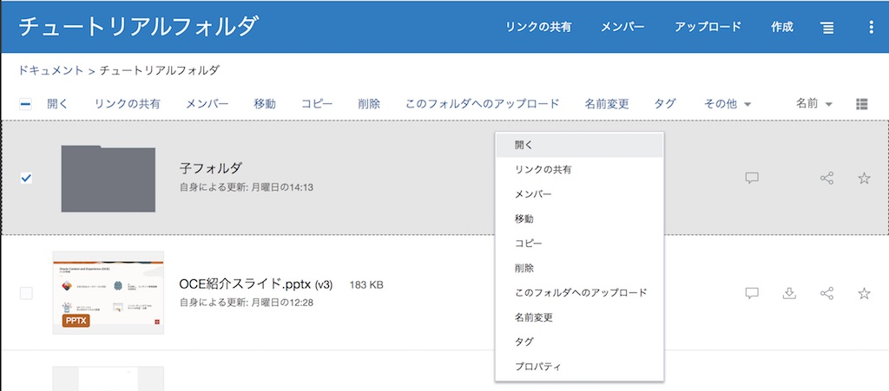

目次に戻る: Oracle Content Management のファイル共有機能を使ってみよう【初級編】
OCM では、ローカル・コンピュータの場合とほぼ同じ方法でファイルを操作します。フォルダを利用してファイルを簡単にグループ化し、コンテンツ管理として提供される一般的な操作（ファイルおよびフォルダのアップロード、ダウンロード、コピー、移動、名前変更、削除など）を実行できます。
【お知らせ】
この文書は、2021年11月時点での最新バージョン(21.11.1)を元に作成されてます。
チュートリアル内の画面ショットについては、現在のコンソール画面と異なっている場合があります。
前提条件
- Oracle Content Management インスタンスを作成する
- OCM の利用ユーザーに OCM インスタンスの CECStandardUser もしくは CECEnterpriseUser アプリケーション・ロールが付与されていること
1. フォルダの作成
1.1 フォルダの作成
-
左ナビゲーションメニューの 「ドキュメント」 をクリックします
-
「作成」 をクリックします

-
「名前」 を入力します（ここでは「チュートリアルフォルダ」と入力）
-
必要に応じて、「説明」 にこのフォルダに関する説明文を入力します（ここでは「フォルダ共有チュートリアル用のフォルダです」と入力）
-
「作成」 をクリックします

-
フォルダが作成されます。作成したフォルダ（ここではチュートリアルフォルダ）をクリックし、開きます
-
フォルダの中に別のフォルダ（サブフォルダ）を作成する場合は、親となるフォルダ（ここでは「チュートリアルフォルダ」）を開いた状態で 「作成」 をクリックします

-
名前を入力し、「作成」 をクリックします。（ここでは「子フォルダ」と入力）
-
サブフォルダが作成されます

[Memo]
上記のように、フォルダアイコンがプレーン（無地）のものは「個人フォルダ」となります。他ユーザーに共有したフォルダ、他ユーザーから共有されたフォルダには、共有アイコンがついた「共有フォルダ」となります（詳細は「共有」の章で説明）
1.2 フォルダ表示の切り替え
-
右端のメニューより、表示形式を切り替えられます。3つの表示形式が選択できます
-
リスト・ビュー
-
グリッド・ビュー
-
表ビュー

-
-
名前 もしくは 最終更新（最終更新の日時） で、フォルダおよびファイルの表示順を切り替えることができます

1.3 フォルダの操作メニュー
フォルダの操作メニューについて、簡単に説明します。
| メニュー | 説明 |
|---|---|
| 開く | 選択したフォルダを開きます |
| 移動 | 選択したフォルダを、別のフォルダ配下に移動します。選択したフォルダ配下のサブフォルダおよびファイルもまとめて移動されます |
| コピー | 選択したフォルダを、別のフォルダ配下にコピーします。選択したフォルダ配下のサブフォルダおよびファイルもまとめてコピーされます |
| 名前変更 | フォルダの名前を変更します |
| リンクの共有 | 選択したフォルダの共有リンクを作成します |
| お気に入りに追加 | クリックすると、フォルダがお気に入りとしてマークされます。お気に入りを解除する場合は、お気に入りから削除 を選択します。お気に入りに設定されたフォルダは、ドキュメント・ホーム→お気に入り よりアクセスできます |
| このフォルダへのアップロード | フォルダに新しいファイルをアップロードします |
| メンバー | 選択したフォルダのメンバーを追加・削除・管理します |
| 会話 | フォルダ紐付けの会話が存在する場合に表示されます。クリックすると、フォルダおよびフォルダに紐付けられた会話が、1つの画面上で表示されます |
| 削除 | 選択したフォルダを削除します。削除されたフォルダはごみ箱に移動されます。削除したフォルダのサブフォルダおよびファイルもまとめて削除（ごみ箱に移動）されます |
| プロパティ | フォルダのプロパティを開きます。フォルダの名前や説明を変更や所有者の変更ができます。また、フォルダのパブリックリンクに対する機能制限を設定できます |
| タグとメタデータ | フォルダにタグまたはメタデータを設定します。タグ/メタデータが設定されたフォルダにファイルをアップロードすると、そのファイルにフォルダに設定したタグ/メタデータが自動的に付加（継承）されます |
| 削除 | フォルダを削除します。フォルダに含まれるファイルおよび子フォルダもあわせて削除されます |
WebUI上のアイコンの説明は、以下ドキュメントをご確認ください
-

以上でこのチュートリアルは終了です。